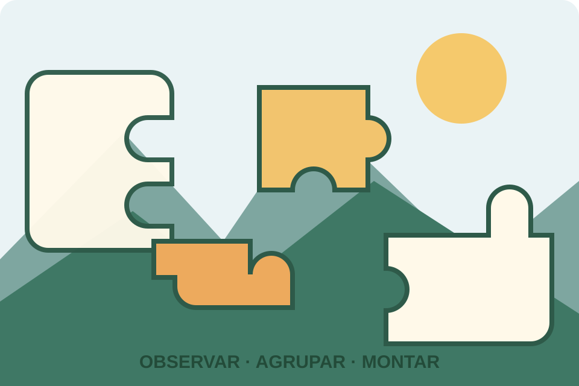

Quebra-cabeças de imagem (diversos)
Montagem de imagens com peças encaixáveis
Uma coleção de quebra-cabeças tradicionais em que as peças são combinadas para reconstruir uma imagem. O desafio varia conforme a imagem e a quantidade de peças.

O desafio
O que observar neste jogo
Esta página reúne os quebra-cabeças tradicionais de encaixe cuja montagem revela uma imagem — por exemplo, paisagens, animais, obras de arte ou outras ilustrações. Cada exemplar pode ter tamanho, formato, quantidade de peças e nível de dificuldade diferentes.
A montagem pode ser feita individualmente ou em grupo. A estratégia mais comum é observar cores, detalhes, bordas e padrões, usando a imagem de referência quando ela estiver disponível.
Guia de ação
Como experimentar
- 1
Prepare a área
Escolha uma superfície plana com espaço suficiente. Vire as peças para cima e confira se há uma imagem de referência na caixa ou no material do exemplar.
- 2
Separe as bordas
Procure peças com um ou mais lados retos e monte o contorno, quando o formato do quebra-cabeça permitir identificar as bordas.
- 3
Agrupe por características
Organize peças por cores, texturas, objetos ou regiões da imagem. Observe o formato dos encaixes junto com a ilustração, em vez de usar apenas uma dessas pistas.
- 4
Monte por regiões e confira
Construa pequenas áreas reconhecíveis e conecte-as ao conjunto. Ao terminar, verifique se todas as peças estão encaixadas e se a imagem está completa.
Possibilidades educativas
O que a atividade pode mobilizar
Percepção visual
Comparar formas, cores, contornos e detalhes para identificar relações entre peças.
Organização e planejamento
Criar grupos de peças e decidir qual região da imagem montar primeiro.
Persistência e cooperação
Experimentar alternativas, revisar encaixes e dividir tarefas em uma montagem coletiva.
“Pode mobilizar” não significa “desenvolve automaticamente”. A experiência depende da proposta, da repetição, do diálogo e das condições de participação.
Mediação
Perguntas que mantêm o problema aberto
- Que característica fez você escolher esta peça para essa região?
- É mais útil procurar pela cor, pelo contorno ou pelo desenho? Por quê?
- Como o grupo pode organizar as peças para que todos participem?
Participação e acessibilidade
Formas de adaptar sem retirar o desafio
- Escolha a quantidade de peças e o tamanho adequados ao tempo e às necessidades dos participantes.
- Use bandejas, folhas de cores contrastantes ou recipientes para separar grupos de peças.
- Permita montar em dupla ou em pequenos grupos, com papéis alternados de observação, busca e encaixe.